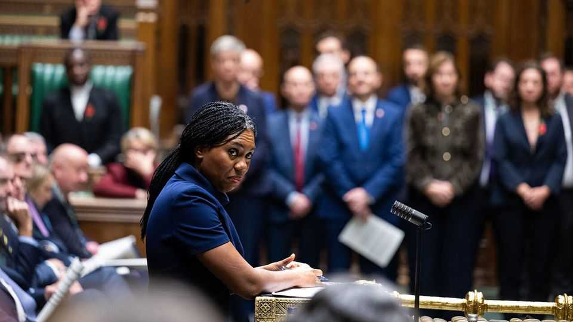

Britain’s Tories want even more Brexit
By saying they will pull out of the European Convention on Human Rights, they threaten big trouble

Nov 12th 2026
IT IS ALWAYS harder to deal with the European Union when political consensus is lacking at home. Looked at from Brussels, why bother with the effort to agree on a closer relationship with Andy Burnham’s Britain? After all, opposition parties say they will tear it up.
Neither the Conservatives nor Reform UK talk much about Brexit these days, because of its unpopularity. But both still promise to reverse Mr Burnham’s planned “reset” with the EU. That would irk businesses wishing to scrap trade barriers, especially in food and agriculture, through closer alignment with the bloc. If the reset boosts exports and lowers food costs, many firms will want to keep it. A shadow-cabinet source admits privately that the Tories might therefore seek a fudge that retains the deal but gives Parliament a theoretical emergency brake on future EU laws.
What worries the EU more is the opposition’s pledge to pull out of the European Convention on Human Rights (ECHR). Kemi Badenoch, the Tory leader, now requires all her parliamentary candidates to support this. EU diplomats suggest she may not have thought through the consequences. It is not just the embarrassment of Britain, a creator of the ECHR, joining Belarus and Russia as the only European countries outside it. More seriously, ECHR membership is assumed in both the post-Brexit trade and co-operation agreement (TCA) and the Windsor framework that softens the customs border between Great Britain and Northern Ireland. It is also in the Good Friday Agreement.
Some Tories argue that other EU countries dislike the ECHR, and especially the court that enforces it. But disapproval and withdrawal are different matters. A forthcoming paper by the Centre for a Better Britain, a think-tank linked to Reform, outlines various options for scrapping all post-Brexit EU treaties, identifying which can be expected to trigger retaliation. One such is pulling out of the ECHR. These treaties are built like a Jenga tower: pull out one key brick and the whole edifice can fall. The most likely response to British ECHR withdrawal would be scrapping the Windsor framework and the TCA as a whole—in effect implementing a version of Brexit so hard that even Boris Johnson avoided it in 2020.
At the next general election voters may therefore face a perverse choice. No party favours the status quo. Labour and the Liberal Democrats will probably campaign for a closer relationship with the EU. At the same time the Tories and Reform will promise to pull out of the ECHR. Anand Menon of UK in a Changing Europe, a think-tank, says this points to just two alternatives: moving to rejoin or reverting to a no-deal Brexit. The mushy compromise that has so far prevailed may no longer be on offer.■